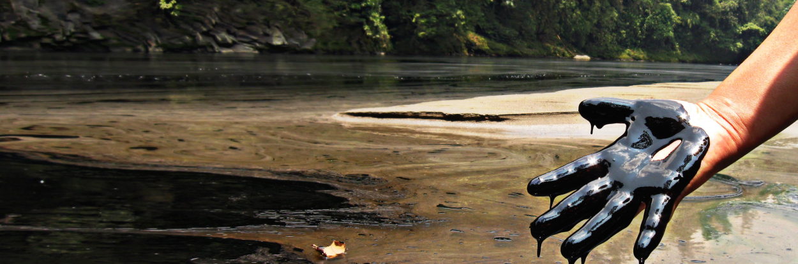
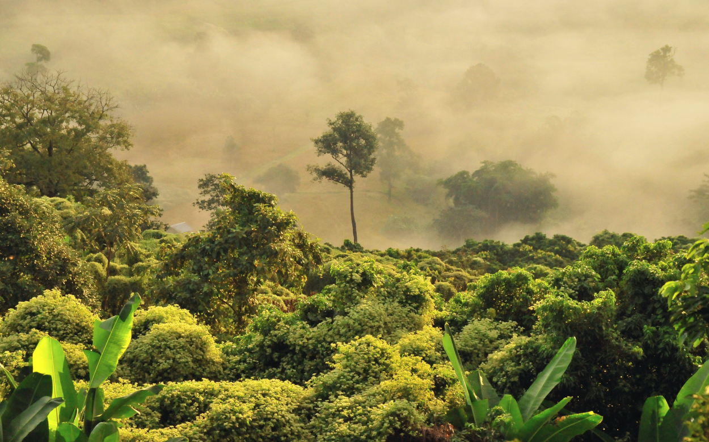

Galleria
Nemonte Nenquimo

Nemonte, che nella lingua Waorani significa Fiume di stelle, è veramente una stella. E come le stelle, sta guidando il suo popolo (e non solo) nella lotta più importante che possiamo combattere: difendere Madre Terra.
Mentre Nemonte continua la sua lotta per proteggere la sua casa, afferma che ha abcoramolta strada da fare quando si tratta di imparare dagli Abuela. "Dico sempre che in un giorno con gli Abuela impari cose che valgono un anno".
“Tutta questa lotta è per mia figlia, perché possa vivere libera, perché possa avere una foresta pulita, piena di animali, di frutta, di piante medicinali, piena di cibo e di vita”.
I Waorani o Huaorani o Waodani (in passato Aucas) sono una popolazione amerinda dell'Ecuador, costituita da circa 2500-3000 individui. Nella loro lingua il loro nome significa: siamo persone. Si sentono infatti persone della giungla e sono divisi in 48 comunità (come i toñampary, wamono, dayuno, garzacocha (presso il Rio Yasuní), quemperi (Rio Cononaco) e tagaeri.
I Waorani
Hanno una visione del mondo che non distingue tra il regno materiale e quello spirituale e credono che le direzioni Nord, Sud, Est e Ovest rappresentino dei punti di riferimento sacri. Hanno una conoscenza approfondita delle piante della foresta pluviale: conoscono quelle commestibili, ma anche quelle velenose e allucinogene.
“Quando sei nella foresta pluviale, ti senti libero, in pace in armonia. Fai il bagno nel fiume o cammini nella giungla... ti calma l'anima".
La foresta
Tanti chiamano la foresta amazzonica “Polmone verde” del pianeta. I suoi alberi producono molto dell’ossigeno che respiriamo e assorbono da 90 a 140 miliardi di tonnellate di anidride carbonica. È importantissima anche per la straordinaria varietà di specie (biodiversità) che ospita. Qui vive il dieci per cento di tutte le specie animali conosciute.
La foresta in cui vivono i Waorani è una delle foreste pluviali più ricche di biodiversità sulla terra, ospita 600 tipi di uccelli, 200 diverse specie di mammiferi, 300 tipi di pesci e migliaia di piante con proprietà medicinali, secondo Amazon Frontlines.